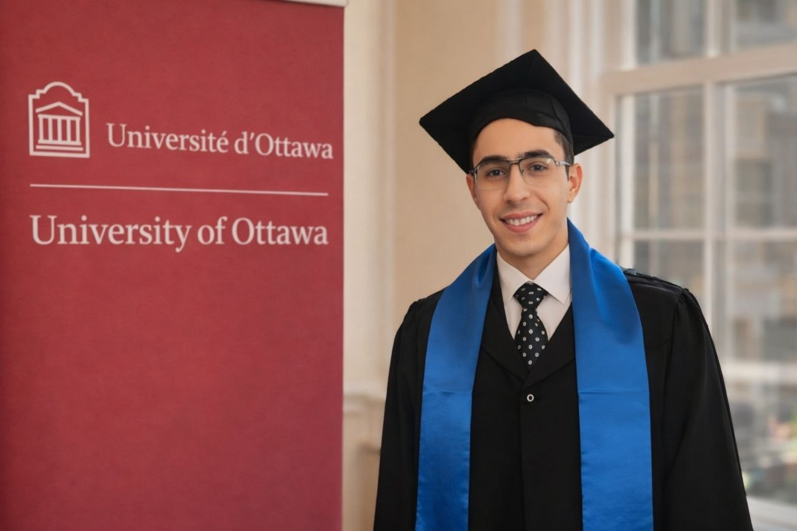

Machine Learning Engineer & Published AI Researcher (IEEE)
I work at the intersection of rigorous research and production ML — from Graph Neural Networks for drug discovery to multimodal sentiment systems. Published at IEEE ASET 2025. Co-founder of AI-Talents (33 mentees). Technical Program Chair, IndabaX Egypt 2026.

Research-first, impact-driven, cross-cultural.
I am a Machine Learning Engineer and published AI researcher whose work is driven by one idea: bridge rigorous research with real-world impact. My trajectory moved from Android and freelancing, through a Master's at the University of Ottawa, into production ML and IEEE-level research.
I hold an M.Eng in Data Science & AI from the University of Ottawa (A+, full DEBI scholarship) and a B.Sc. in Computer Science & Math from Helwan University (2nd in class). Over 2+ years I have specialized in deep learning, NLP, multimodal AI and generative systems, with production deployment experience.
My research on Predicting Drug-Drug Interactions using Graph Neural Networks was accepted and presented at IEEE ASET 2025. I also completed the Deep Dive into Blockchain Summer School at UZH, expanding my perspective on secure, decentralized systems.
I am actively seeking a PhD position where I can contribute to healthcare AI, multimodal learning, GNNs, or trustworthy ML.
From concept to peer-reviewed IEEE publication — proven end-to-end research capability.
Preprocessing to deployment and monitoring. Spoken Language ID system with 90%+ accuracy in production.
Co-founded AI-Talents (33 mentees). Technical Program Chair at IndabaX Egypt 2026.
Egypt, Canada, Germany, Switzerland, UAE. Adaptable, open-minded, detail-oriented.
Four strongest — research-driven, production-ready.
Three-modality fusion (text, audio, video) for sentiment & emotion recognition across English and Arabic. Real-time multimodal inference on video input.
Graph Neural Networks for predicting drug-drug interactions — safer prescriptions. Published and presented at IEEE ASET 2025.
Five-stage hybrid dense-sparse retrieval for log analysis. BM25 + BGE + SBERT, Qwen2.5-7B for report generation.
Three-phase AI framework for distributed databases: RF classifier (97.88%), Q-Learning replication, LSTM anomaly detection.
Peer-reviewed research.
Proceedings of the 7th HCT ASET Conference · Abu Dhabi, UAE · 2025 · IEEE Xplore
My contribution: GNN architecture design, DrugBank data pipeline, benchmarking vs. baselines, co-authored writing.
Where research meets impact.
Lead the technical program for Egypt's largest AI/ML community conference. Curate the workshop track, recruit speakers and mentors, and shape the scientific direction.
Co-founded a mindset-first EdTech startup training the next generation of AI engineers across MENA. Architected the full curriculum. 33 active mentees.
Shipped production Spoken Language Identification with 90%+ accuracy — full ML lifecycle from preprocessing through deployment and monitoring.
Researched GANs for synthetic data generation. Contributed to ML pipeline design alongside senior researchers.
Where I want to go deeper in a PhD.
ML for drug discovery, clinical decision support, and Arabic medical NLP. Published IEEE work in drug-drug interactions.
Molecular property prediction, relational reasoning, dynamic graphs, scalability of GNNs on real-world datasets.
Fusion of text, audio, and visual signals. Cross-lingual Arabic / English sentiment and emotion recognition.
Hybrid dense-sparse retrieval, knowledge-grounded generation, evaluation of RAG under distribution shift.
Robustness, anomaly detection, interpretability — so ML systems can be deployed in healthcare and critical settings with confidence.
Global learning, intentional trajectory.
Full DEBI scholarship (Ministry of ICT + Uni. of Ottawa). Capstone: production Spoken Language ID with 90%+ accuracy.
→ Built my strongest foundation in ML, deployment, and real-world language systems.
Double major in CS + Mathematics.
→ Mathematical and computational foundation behind my current work in ML, multimodal AI, graph learning, and system design.
Ranked #1 in Europe for Blockchain education (CoinDesk).
→ Interdisciplinary training in decentralized systems — expands my perspective on secure, scalable, cross-domain AI applications.
Research, PhD, or applied AI — I'd be glad to connect.
Whether you want to discuss a PhD opportunity, propose a research collaboration, or scope an applied AI engagement — I'd be glad to connect. For consulting, research discussion, or PhD opportunities, email me directly or book a short call.
Research collaboration, PhD discussion, consulting — same person, different tracks.
I work with both research teams and applied clients. My work sits between rigorous experimentation and production-ready AI systems — so I can contribute to research-oriented collaboration, consulting engagements, or full ML system development.
Literature reviews, experiment design, baseline development, benchmarking, and model prototyping across multimodal AI, GNNs, RAG, and trustworthy ML.
Open to PhD opportunities, research assistantships, and interdisciplinary collaborations where machine learning can contribute to meaningful scientific or societal impact.
Hands-on curriculum design, technical workshops, and mentoring for students, teams, and early-career AI practitioners.
Production-minded ML systems — from preprocessing and model training to deployment, monitoring, and iteration.
Retrieval-augmented generation, tool-calling agents, and LLM-powered workflow automation for support, analytics, and internal knowledge systems.
Exploratory analysis, modeling, reporting, and research-to-product translation for organizations that need both technical depth and practical delivery.
Email me directly or book a short call — choose Research / PhD or Consulting as the meeting type.
Growing the AI ecosystem in MENA and beyond.
Technical Program Chair
Published Author & Presenter
Attendee
Research to production.
Pick a meeting type, then choose a time on the calendar below.